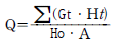
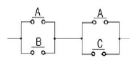
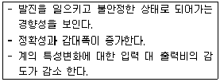
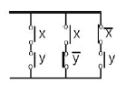
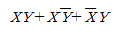
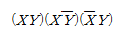
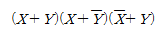
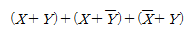
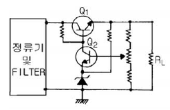

소방설비기사(전기분야) (2005-05-29 기출문제)
1과목: 소방원론
1. 다음 물질 중 인화점이 가장 낮은 것은?
- 에틸알콜
- 등유
- 경유
- 디에틸에테르
(정답률: 62%)

2. 연소의 4대 요소로 옳은 것은?
- 가연물-열-산소-발열량
- 가연물-발화온도-산소-반응속도
- 가연물-열-산소-순조로운 연쇄반응
- 가연물-산화반응-발열량-반응속도
(정답률: 77%)
3. 유류를 저장한 상부 개방탱크의 화재에서 일어날 수 있는 특수한 현상들에 속하지 않는 것은?
- 후레쉬 오버(Flash over)
- 보일 오버(Boil over)
- 슬롭 오버(Slop over)
- 후로스 오버(Froth over)
(정답률: 66%)
4. 건물내부에서의 연소 확대 방지수단이 아닌 것은?
- 방화구획
- 날개벽 설치
- 방화문 설치
- 건축설비에의 연소방지 조치
(정답률: 74%)
5. 다음은 화재하중을 구하는 공식이다. 여기에서 화재하중 Q의 단위에 해당되는 것은?

- ㎏/m2
- kcal/m2
- ㎏.kcal/m2
- kcal.m2/kg
(정답률: 74%)
6. 우리나라 화재의 원인 중 가장 많은 것은?(오류 신고가 접수된 문제입니다. 반드시 정답과 해설을 확인하시기 바랍니다.)
- 유류
- 전기
- 담배불
- 방화
(정답률: 63%)
7. 가연성액체가 개방된 상태에서 증기를 계속 발생시키면서 연소가 지속될 수 있는 최저온도를 무엇이라고 하는가?
- 인화점
- 연소점
- 발화점
- 기화점
(정답률: 70%)
8. 유류탱크 화재시의 슬롭오버현상이 아닌 것은?
- 연소면의 온도가 100℃이상일 때 발생
- 폭발로 인한 유류탱크 파괴후 유출된 연소유에서 발생
- 연소면의 폭발적 연소로 탱크 외부까지 화재가 확산
- 소화시 외부에서 뿌려지는 물에 의하여 발생
(정답률: 43%)
9. 소화원리(消火原理)에 대한 것이 아닌 것은?
- 질식(窒息)소화
- 가압(加壓)소화
- 제거(除去)소화
- 냉각(冷却)소화
(정답률: 82%)
10. 인체의 폐에 가장 큰 자극을 주는 기체는?
- CO2
- H2
- CO
- N2
(정답률: 70%)
11. 플래쉬 오버(Flash over)란 ?
- 건물 화재에서 가연물이 착화하여 연소하기 시작하는 단계이다.
- 건물 화재에서 발생한 가연가스가 일시에 인화하여 화염이 확대되는 단계이다.
- 건물 화재에서 화재가 쇠퇴기에 이른 단계이다.
- 건물 화재에서 가연물의 연소가 끝난 단계이다.
(정답률: 87%)
12. 1g의 물체를 1℃만큼 온도 상승 시키는데 필요한 열량을 나타내는 것은?
- 잠열
- 복사열
- 비열
- 열용량
(정답률: 64%)
13. 다음 물질 중 물과 반응하여 가연성 기체를 발생하지 않는 것은?
- 칼륨
- 인화아연
- 산화칼슘
- 탄화알루미늄
(정답률: 60%)
14. 과산화 물질을 취급할 경우의 주의사항으로 가장 관계가 먼 내용은?
- 가열, 충격, 마찰을 피한다.
- 가연물질과의 접촉을 피한다.
- 용기에 옮길 때는 개방용기를 사용한다.
- 환기가 잘되는 차거운 장소에 보관한다.
(정답률: 78%)
15. 화재가 발생했을 때 초기진화나 확대방지를 위한 대책이 아닌 것은?
- 스프링클러설비
- 연결송수구설비
- 자동화재탐지설비
- 갑종방화문설비
(정답률: 52%)
16. 피난계획에 관한 설명으로 옳지 않은 것은?
- 계단의 배치는 집중화를 피하고 분산한다.
- 피난동선에는 상용의 통로, 계단을 이용토록 한다.
- 방화구획은 단순 명확하게 하고 적절히 세분화 한다.
- 계단은 화재시 연도로 되기 쉽기 때문에 직통계단 으로 하지 않는 것이 좋다.
(정답률: 69%)
17. 다음 중 자연발화성을 일으키기 가장 쉬운 것은?
- 사염화탄소
- 휘발유
- 등유
- 아마인유
(정답률: 55%)
18. 건축물 화재시 제2차 안전구획은?
- 복도
- 전실
- 지상
- 계단
(정답률: 55%)
19. 출화는 화재를 말하는데, 옥외출화의 시기를 나타낸 것은?
- 천장속이나 벽에 발염착화한 때
- 창이나 출입구 등에 발염착화한 때
- 화염이 외부를 완전히 뒤덮을 때
- 화재가 건물의 외부에서 발생해서 내부로 번질 때
(정답률: 64%)
20. 건물화재에 대비하는 것으로 가장 중요시 하는 것은?
- 인명의 피난
- 시설의 보호
- 소방대원의 진입
- 화재부하의 대소
(정답률: 80%)
2과목: 소방전기회로
21. 50[Ω]의 저항과 100[Ω]의 저항을 병렬로 접속했을 때 합성저항[Ω]은?
- 33.3
- 43.6
- 51.8
- 63.9
(정답률: 69%)
22. 10 C의 전하가 5초동안 어느 점을 통과하고 있을 때 전류 값은 몇 A 인가?
- 2
- 5
- 10
- 50
(정답률: 59%)
23. 그림과 같은 유접점회로의 논리식은?

- AB+BC
- A+BC
- B+AC
- AB+B
(정답률: 82%)
24. 한 조각의 실리콘속에 여러 개의 트랜지스터, 다이오드, 저항 등을 넣고 상호 배선을 하여 하나의 회로로서의 기능을 갖게 한 것을 무엇이라 하는가?
- 포토 트랜지스터
- 더어미스터
- 바리스터
- IC
(정답률: 86%)
25. 다음과 같은 특성을 갖는 제어계는?

- 프로세스제어
- 피드백제어
- 프로그램제어
- 추종제어
(정답률: 60%)
26. 그림과 같은 계전기 접점회로의 논리식은?





(정답률: 80%)
27. 금속관 공사용 부품이 아닌 것은?
- COUPLING
- SADDLE
- CLEAT
- BUSHING
(정답률: 62%)
28. 소형이면서 대전력용 정류기로 사용하는데 적당한 것은?
- 게르마늄 정류기
- CdS
- 셀렌정류기
- SCR
(정답률: 79%)
29. 전동기 등의 정격전류의 합계가 50A이하일 때 그 저압 옥내 간선에 사용할 수 있는 전선의 허용 전류는 전동기 등의 합계 전류의 몇 배의 값 이상으로 하여야 하는가?
- 1.1
- 1.25
- 3
- 5
(정답률: 60%)
30. 똑같은 전지 n개를 직렬로 연결했을 때 최대전력을 낼 수있는 것은 부하저항이 전지 1개 내부저항의 몇 배일 때 인가?
- n
- 2n
- n2
- 1/n
(정답률: 37%)
31. 1[kwh]의 전력량은 몇[J] 인가?
- 1
- 60
- 1000
- 3.6×106
(정답률: 62%)
32. v=√2Vsin wt[V]인 전압에서 wt π/6일 때의 크기가 70.7V이면 이 전원의 실효값은 몇 V 가 되는가 ?
- 100
- 200
- 300
- 400
(정답률: 64%)
33. 콘덴서와 코일에서 실제적으로 급격히 변화할 수 없는 것이 있다면 어느 것인가?
- 코일에서 전압, 콘덴서에서 전류
- 코일에서 전류, 콘덴서에서 전압
- 코일, 콘덴서 모두 전압
- 코일, 콘덴서 모두 전류
(정답률: 65%)
34. 60Hz의 3상전압을 전파 정류하면 맥동주파수는 얼마인가?
- 60
- 120
- 240
- 360
(정답률: 75%)
35. 제 3고조파 전류가 나타나는 결선은?
- Y - Y
- Y - Δ
- Δ - Δ
- Δ - Y
(정답률: 69%)
36. R=25Ω,XL=5Ω, XC=10Ω을 병렬로 접속한 회로의 어드미턴스는 몇 ℧가?
- 0.4-j0.1
- 0.4+j0.1
- 0.04-j0.1
- 0.04+j0.1
(정답률: 45%)
37. 그림과 같은 정전압회로에서 Q1의 역할은?

- 증폭용
- 비교부용
- 제어용
- 기준부용
(정답률: 80%)
38. 배전반 전면에 부착되는 계기가 아닌 것은?
- 전압계
- 전류계
- 단로기
- 주파수계
(정답률: 66%)
39. 배선의 절연저항은 어떤 측정기를 사용하여 측정하는가?
- 전압계
- 전류계
- 메가
- 더미스터
(정답률: 88%)
40. 목표값이 임의의 변화에 추종하도록 구성되어 있는 것을 무엇이라 하는가?
- 자동조정
- 추치제어
- 서보기구
- 비율제어
(정답률: 31%)
3과목: 소방관계법규
41. 화재의 원인 및 피해 등에 대한 조사의 의무를 가진 자는?
- 시, 도지사
- 행정자치부장관
- 소방본부장 또는 소방서장
- 관할 경찰서장
(정답률: 76%)
42. 예방규정을 정하여야 하는 제조소등의 관계인은 예방규정을 정하여 언제까지 시ㆍ도지사에게 제출하여야 하는가?
- 제조소등의 착공 신고 전
- 제조소등의 완공 신고 전
- 제조소등의 사용 시작 전
- 제조소등의 탱크안전성능시험 전
(정답률: 36%)
43. 위험물제조소 등에 옥외소화전을 설치하려고 한다. 옥외 소화전을 5개 설치시 필요한 수원의 양은 얼마인가?
- 14m3 이상
- 35m3 이상
- 36m3 이상
- 54m3 이상
(정답률: 37%)
44. 소방대상물의 방염처리업 등록의 영업정지 또는 취소대상에 해당하지 않는 것은?
- 거짓 그 밖의 부정한 방법으로 등록을 한 때
- 정당한 사유 없이 계속하여 6개월간 휴업한 때
- 다른 자에게 등록증 또는 등록수첩을 빌려준 때
- 등록을 한 후 정당한 사유 없이 1년이 지나도록 영업을 개시하지 아니한 때
(정답률: 67%)
45. 다음 중 화재경계지구의 지정대상지역이 아닌 곳은?
- 시장지역
- 공장
- 주택이 밀집한 지역
- 위험물의 저장 및 처리시설이 밀집한 지역
(정답률: 53%)
46. 일반 소방시설설계업의 기계분야의 영업범위는 연면적 몇m2 미만의 특정소방대상물에 대한 소방시설의 설계인가?
- 10,000
- 20,000
- 30,000
- 50,000
(정답률: 57%)
47. 소방기본법에 의해서 행정자치부장관ㆍ소방본부장 또는 소방서장은 구조대를 편성·운영하여야 하는 바, 특수구조대에 속하지 않은 것은?
- 화학구조대
- 항공구조대
- 수난구조대
- 고속국도구조대
(정답률: 38%)
48. 소방대상물에 대한 개수명령권자는?
- 행정자치부 장관
- 시·도지사
- 소방본부장·소방서장
- 소방방재청장
(정답률: 69%)
49. 다중이용업소에 설치하는 실내장식물은 원칙적으로 불연재료 또는 준불연재료로 하여야 하는데 합판또는 목재로 설치한 실내장식물의 면적이 천장과 벽을 합한 면적의 얼마 이하가 되면 방염처리 대상에서 제외되는가? (단, 간이 스프링클러설비가 설치된 특정소방대상물임)
- 3/10 이하
- 4/10 이하
- 5/10 이하
- 6/10 이하
(정답률: 34%)
50. 다음 중 소방시설관리업의 보조 기술인력으로 등록할 수 없는 자는?
- 소방설비기사
- 산업안전기사
- 소방설비산업기사
- 소방공무원 3년 이상 근무 경력자로 소방시설 인정자격 수첩을 교부 받은 자
(정답률: 65%)
51. 소화난이도등급Ⅲ의 알킬알루미늄을 저장하는 이동탱크저장소에 자동차용소화기 2개 이상을 설치한 후 추가로 설치 하여야 할 마른모래는 몇ℓ이상인가?
- 50ℓ이상
- 100ℓ이상
- 150ℓ이상
- 200ℓ이상
(정답률: 31%)
52. 제4류 위험물의 지정수량 연결이 잘못된 것은?
- 아세톤-400ℓ
- 휘발유-200ℓ
- 등유-1000ℓ
- 초산메틸에스테르-4000ℓ
(정답률: 50%)
53. 자동화재탐지설비 설치대상으로 틀린 것은?
- 근린생활시설로서 연면적 600m2 이상인 것
- 교육연구시설로서 연면적 2,000m2 이상인 것
- 지하구
- 길이 500m 이상의 터널
(정답률: 66%)
54. 소방서장은 소방대상물에 대한 위치ㆍ구조ㆍ설비 등에 관하여 화재가 발생하는 경우 인명피해가 클 것으로 예상되는 때에는 소방대상물의 개수ㆍ 사용의 금지 등의 필요한 조치를 명할 수 있는데 이때 그 손실에 따른 보상을 하여야 하는 바, 해당되지 않은 사람은?
- 특별시장
- 도지사
- 행정자치부장관
- 광역시장
(정답률: 19%)
55. 화재조사와 관련된 내용으로서 바르지 못한 것은?(관련 규정 개정전 문제로 여기서는 기존 정답인 4번을 누르면 정답 처리 됩니다. 자세한 내용은 해설을 참고하세요)
- 화재조사 전담부서에는 발굴용구, 기록용기기, 감식용기기 등의 장비를 갖추어야 한다.
- 화재조사는 소화활동과 동시에 실시하여야 한다.
- 화재의 원인과 피해조사를 위하여 시·도 소방본부와 소방서에 전담부서를 설치·운영한다.
- 소방방재청장은 화재조사에 관한 시험에 합격한 자에 대해 2년마다 전문보수교육을 실시하여야 한다.
(정답률: 76%)
56. 특정소방대상물 중 노유자시설에 속하지 않는 것은?
- 군휴양시설
- 요양시설
- 아동복지시설
- 장애인재활시설
(정답률: 66%)
57. 특수가연물을 쌓아 저장하는 기준이 아닌 것은?
- 물질별로 구분하여 쌓을 것
- 쌓는 높이는 20m이하가 되도록 할 것
- 쌓는 부분의 바닥면적은 50m2이하가 되도록 할 것
- 쌓는 부분의 바닥면적 사이는 1m 이상이 되도록 할 것
(정답률: 65%)
58. 방화관리업무를 수행하지 아니한 특정소방대상물의 관계인의 벌칙은?
- 200만원이하의 과태료
- 200만원이하의 벌금
- 300만원이하의 과태료
- 300만원이하의 벌금
(정답률: 36%)
59. 화재조사의 시기는?
- 소화활동전에 먼저 실시
- 소화활동과 동시에 실시
- 소화활동후에 즉시 실시
- 소화활동후 2시간이내에 실시
(정답률: 55%)
60. 다중이용업소에 설치해야 할 소방시설이 아닌 것은?
- 소화설비
- 방화설비
- 피난설비
- 경보설비
(정답률: 65%)
4과목: 소방전기시설의 구조 및 원리
61. 누전경보기에서 변류기의 설치위치로 옳은 것은?
- 옥외인입선의 제1지점의 부하측에 설치
- 제1종 접지선측의 점검이 쉬운 위치에 설치
- 옥내인입선의 제1지점의 부하측에 설치
- 제3종 접지선측의 점검이 쉬운 위치에 설치
(정답률: 58%)
62. 기동장치에 따른 화재신고를 수신한 후 필요한 음량으로 화재발생 상황 및 피난에 유효한 방송이 자동으로 개시될때 까지의 소요시간은?
- 5초 이하
- 10초 이하
- 30초 이하
- 60초 이하
(정답률: 70%)
63. 내열배선에 사용하는 전선의 종류가 아닌 것은?
- 600[V] 1종 비닐절연전선
- 버스덕트(Bus Duct)
- 4불화에틸렌 절연전선
- 하이파론 절연전선
(정답률: 46%)
64. 5층(지하층은 제외한다) 이상의 소방대상물 또는 그 부분에 있어서 지하층에서 발화한 때에는 우선적으로 경보를 발할 수 있도록 하여야 하는 층은?
- 발화층, 그 직상층 및 기타의 지하층
- 발화층, 그 직상층 및 1층
- 발화층, 그 직상층 및 2층
- 발화층, 그 직상층 및 3층
(정답률: 74%)
65. 누전경보기의 수신부 설치장소로 적당한 곳은?
- 화약류를 제조하는 장소
- 습도가 높은 장소
- 습도가 높지 않고 적당한 장소
- 온도의 변화가 급격한 장소
(정답률: 67%)
66. 포지 등을 사용하여 자루형태로 만든 것으로서 화재시 사용자가 그 내부에 들어가서 내려옴으로 대피할 수 있는 피난기구는?
- 피난사다리
- 완강기
- 간이완강기
- 구조대
(정답률: 70%)
67. 비상 축전지의 2차 충전전류를 구하는 공식은?
- (축전지의 정격용량/축전지의 공칭용량) + (상시부하/표준전압)[A]
- (축전지의 공칭용량/축전지의 정격용량) + (상시부하/표준전압)[A]
- (축전지의 정격용량/축전지의 공칭용량) + (표준전압/상시부하)[A]
- (축전지의 공칭용량/축전지의 정격용량) + (표준전압/상시부하)[A]
(정답률: 40%)
68. 연기감지기를 설치하지 않아도 되는 장소는?
- 반자의 높이가 15m 이상 20m 미만인 장소
- 25m 인 복도
- 20m 인 계단 및 경사로
- 엘리베이터 권상기실, 린넨슈트 이와유사한 장소
(정답률: 46%)
69. 부속회로의 전로와 대지 사이 및 배선 상호간의 절연저항은 1경계구역마다 직류 250[V]의 절연 저항측정기를 사용하여 측정한 절연저항이 얼마 이상이 되도록 하여야 하는가?
- 0.01㏁이상
- 0.1㏁이상
- 0.2㏁이상
- 0.3㏁이상
(정답률: 62%)
70. 청각장애인용 시각경보장치의 설치 높이는 바닥으로부터 몇 m의 장소에 설치하여야 하는가?
- 0.5m이상 1m이하
- 0.5m이상 1.5m이하
- 0.8m이상 1.5m이하
- 2m이상 2.5m이하
(정답률: 62%)
71. 무선통신 보조설비로서 누설동축케이블의 임피던스는 몇 [Ω]인가?
- 10
- 20
- 30
- 50
(정답률: 67%)
72. 비상콘센트 설비의 전원회로의 배선은?
- 내열배선
- 내화배선
- 케이블배선
- 일반배선
(정답률: 63%)
73. 비상콘센트의 플럭접속기는 3상교류 200[V] 또는 3상교류 380[V]의 것에 있어서는 어떤 플러그 접속기를 사용하여야 하는가?(관련 규정 개정전 문제로 여기서는 기존 정답인 3번을 누르면 정답 처리됩니다. 자세한 내용은 해설을 참고하세요.)
- 접지형 1극
- 접지형 2극
- 접지형 3극
- 접지형 4극
(정답률: 54%)
74. 누전경보기의 공칭작동전류치는 몇 [mA] 이하 이어야 하는가?
- 50
- 100
- 150
- 200
(정답률: 53%)
75. 무선통신보조설비의 증폭기 전면에 설치하는 기기로 바르게 연결된 것은?
- 표시등-전류계
- 개폐스위치-전압계
- 표시등-전압계
- 개폐스위치-전류계
(정답률: 82%)
76. 자동화재속보설비의 속보기의 예비전원을 화재속보의 화재표시 및 경보를 몇 분간 유지하여야 하는가?
- 10분
- 20분
- 30분
- 60분
(정답률: 29%)
77. 다음 중 소방대상물과 유도등의 종류가 맞지 않는 것은?
- 판매시설 - 대형피난구유도등
- 교육연구시설 - 객석유도등
- 운동시설 - 대형피난구유도등
- 집회장 - 객석유도등
(정답률: 54%)
78. 실내가 아닌 실외에 설치하는 비상방송설비 확성기의 음성 입력은 몇 W 인가?
- 3
- 4
- 5
- 6
(정답률: 70%)
79. 다음 중 자동화재탐지설비의 수신기 설치기준으로 틀린 것은?
- 수위실 등 상시 사람이 근무하는 장소에 설치할 것
- 수신기의 음향기구는 그 음량 및 음색이 다른 기기의 소음 등과 명확히 구별될 수 있는 것으로 할 것
- 수신기의 조작 스위치는 바닥으로부터의 높이가 0.5m이상 1m 이하인 장소에 설치할 것
- 수신기는 감지기·중계기 또는 발신기가 작동하는 경계구역을 표시할 수 있는 것으로 할 것
(정답률: 70%)
80. 휴대용 비상조명등의 건전지 및 충전식 밧데리는 몇 분이상 유효하게 사용할 수 있어야 하는가?
- 10분
- 20분
- 30분
- 40분
(정답률: 64%)